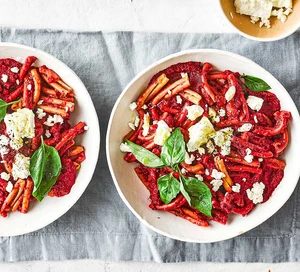

Beetroot & feta pasta

Bring colour to your dinner table with our creamy beetroot and feta pasta. Packed with nutrients, it's a satisfying veggie lunch or supper for the family
Ingredients
- 2 large beetroots, peeled and roughly chopped into chunks
- 1 tbsp olive oil
- 2 onions, finely chopped
- 4 celery sticks, finely chopped, celery tops kept separate
- 4 carrots, peeled and finely chopped
- 1 small bunch of basil
- 2 garlic cloves, finely chopped
- 400g wholemeal pasta
- 75g low-fat crème fraîche
- 100g feta
Steps
- Put a large pan of salted water on a high heat, bring to the boil and add the beetroot chunks. Boil for 5 mins, then transfer the beetroot to a plate using a slotted spoon. Set the pan of cooking water aside.
- Meanwhile, put the olive oil in a large frying pan set over a medium heat, then add the onions, celery and carrots, and cook for 8 mins until softened. Finely chop the basil stalks and celery tops, then add to the pan along with the garlic, and fry for another 30 seconds.
- Tip the pasta into the pan of beetroot water and simmer for 13-15 mins (depending on what pasta you’re using) until just cooked but retaining a little bite. Drain, reserving 200ml of the pasta water and tip the pasta back into the pan.
- Meanwhile, put the beetroot with half of the fried veg into the bowl of a food processor with most of the basil leaves and the crème fraîche, then blitz until smooth. Gradually add the reserved pasta water to loosen until you have a thick mixture.
- Stir this sauce through the pasta along with the remaining fried veg and some seasoning. Divide between bowls, crumble over the feta, then scatter with the remaining basil leaves. Grind over some black pepper, if you like.